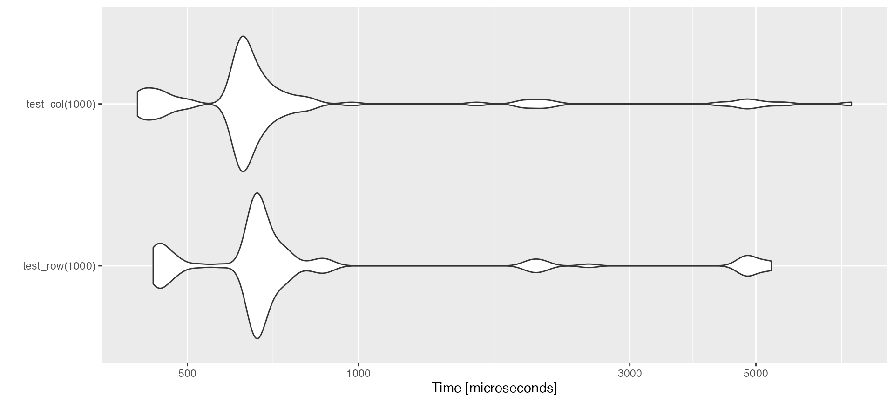
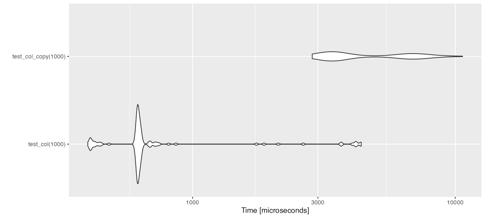
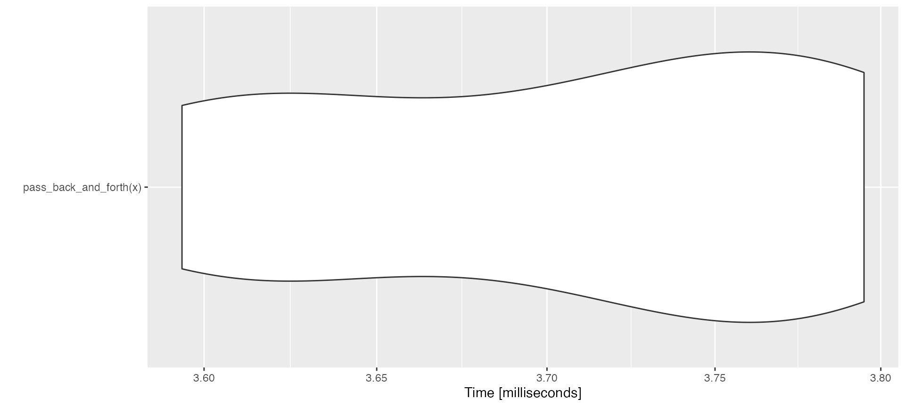

Testing_speed.Rmd
library(ppmcmc)
library(microbenchmark)
library(ggplot2)Here we explore passing objects efficiently between R and c++ (using Rcpp). This will likely be obvious to a computer scientist but…let’s learn by doing.
Firstly we have written two function in c++ that take a matrix and modify it by adding a constant. This is either done: 1. Across a row, using add_to_row() or 2. Down a column using add_to_col(). Rcpp passes by reference by default and therefore these functions modify in place (unless a copy of the matrix passed to them is forced to be made).
To show what these functions do:
x <- matrix(0L, nrow = 5, ncol = 5)
x
#> [,1] [,2] [,3] [,4] [,5]
#> [1,] 0 0 0 0 0
#> [2,] 0 0 0 0 0
#> [3,] 0 0 0 0 0
#> [4,] 0 0 0 0 0
#> [5,] 0 0 0 0 0
add_to_row(x, 0, 1)
x
#> [,1] [,2] [,3] [,4] [,5]
#> [1,] 1 1 1 1 1
#> [2,] 0 0 0 0 0
#> [3,] 0 0 0 0 0
#> [4,] 0 0 0 0 0
#> [5,] 0 0 0 0 0
add_to_col(x, 0, 1)
x
#> [,1] [,2] [,3] [,4] [,5]
#> [1,] 2 1 1 1 1
#> [2,] 1 0 0 0 0
#> [3,] 1 0 0 0 0
#> [4,] 1 0 0 0 0
#> [5,] 1 0 0 0 0We can test the efficiency impact of modifying row-wise or column-wise:
test_row <- function(n){
x <- matrix(0L, nrow = n, ncol = n)
add_to_row(x, 0, 1)
}
test_col <- function(n){
x <- matrix(0L, nrow = n, ncol = n)
add_to_col(x, 0, 1)
}
row_v_col <- microbenchmark(test_row(1000), test_col(1000), times = 100)
ggplot2::autoplot(row_v_col) We can see that, as the elements of the matrix are stored in the vector in memory in column-major order, operating column-wise is quicker. However the differences are quite small (~ 100 microseconds, or 1 ten thousandth of a second).
We need to be much more careful about making copies. We can show that is more inefficient if a copy is forced to be made if we pass a numeric matrix (not integer):
test_col_copy <- function(n){
x <- matrix(0, nrow = n, ncol = n)
add_to_col(x, 0, 1)
}
col_v_copy <- microbenchmark(test_col(1000), test_col_copy(1000), times = 100)
ggplot2::autoplot(col_v_copy)
Lets show how quickly we can do many steps between R and c++, modifying a large matrix at each step.
pass_back_and_forth <- function(x){
out <- rep(0, 1000)
for(i in 1:1000){
add_to_col(x, 0, i)
out[i] <- x[1,1]
}
return(out)
}
x <- matrix(0L, nrow = 1000, ncol = 1000)
out <- pass_back_and_forth(x)
head(out)
#> [1] 1 3 6 10 15 21
ggplot2::autoplot(microbenchmark(pass_back_and_forth(x), times = 10))